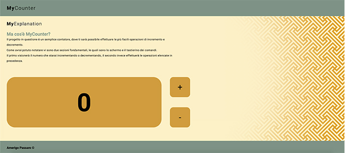
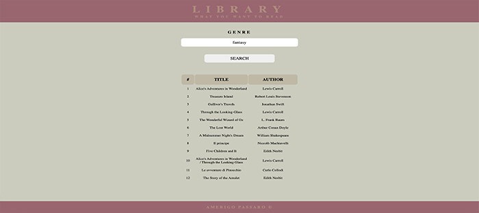
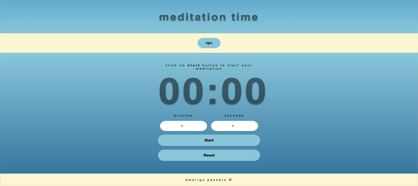

<!DOCTYPE html>
<html>

  <head>

    <title>Amerigo Passaro Website v.1.0</title>
    <meta name="viewport" content="width=device-width, initial-scale=1.0">
    <meta name="description" content="Primo sito web in Front End Development il cui contenuto &egrave; Biografia, Principali skill di sviluppo web e Portfolio dello sviluppatore Amerigo Passaro">
    <link rel="icon" type="image/x-icon" href="assets/img/favicon.ico">

    <!-- Meta tag Open Graph -->
    <meta property="og:title" content="Amerigo Passaro Website Homepage">
    <meta property="og:url" content="https://www.amerigopassaro.it/index.html">
    <meta property="og:image" content="assets/img/og-cover.jpg">
    <meta property="og:type" content="website">
    <meta property="og:description" content="Primo sito web in Front End Development il cui contenuto &egrave; Biografia, Principali skill di sviluppo web e Portfolio dello sviluppatore Amerigo Passaro">
    <meta property="og:locale" content="it_IT">

    <!-- Link tag Fogli di stile -->
    <link href="assets/css/style.css" rel="stylesheet">
    <link href="assets/css/header.css" rel="stylesheet">
    <link href="assets/css/main.css" rel="stylesheet">
    <link href="assets/css/responsive.css" rel="stylesheet">

    <!-- Link tag Font Roboto -->
    <link rel="preconnect" href="https://fonts.googleapis.com">
    <link rel="preconnect" href="https://fonts.gstatic.com" crossorigin>
    <link href="https://fonts.googleapis.com/css2?family=Roboto:ital,wght@0,100;0,300;0,400;0,500;0,700;0,900;1,100;1,300;1,400;1,500;1,700;1,900&display=swap" rel="stylesheet">

  </head>

  <body>

    <!-- <main>

      <section>
        <h2>
          Development<b>Skills</b>
        </h2>
        <article id="skill">
          <p class="main-question">
            Cosa so fare?
          </p>
          <p>
            Ecco una lista delle mie skill relative allo sviluppo web:
            <ul id="skill-list">
              <li class="skill-item">HTML</li>
              <li class="skill-item">CSS</li>
              <li class="skill-item">JavaScript</li>
              <li class="skill-item">React</li>
            </ul>
          </p>
        </article>
      </section>

      <section id="section-port">
        <h2>
          Personal<b>Portfolio</b>
        </h2>
        <article id="port">
          <p class="main-question">
            Vi mostro qualcosa?
          </p>
          <p class="main-text">
            Dopo essermi presentato ed avervi detto cosa so fare, ecco qualche dimostrazione.<br>

            <div id="projects-container">

              <div class="project-box">
                <h3>AmerigoPassaro</h3>
                <h4>My personal website</h4>
                
                <p class="project-description">
                  Quello su cui state navigando &egrave; il mio primo progetto presente sul mio portfolio.<br>
                  Esso contiene tutte le informazioni su di me e sui miei lavori.<br>
                  Se desiderate vedere il codice trovate tutto sul mio profilo GitHub.
                  <a class="project-link" href="https://github.com/AmerigoPassaro/Start2Impact-HTML-CSS-Project">Repository GitHub</a>
                  <a class="project-link" href="https://www.amerigopassaro.it/">Link al progetto</a>
                </p>
              </div>

              <div class="project-box">
                <h3>MyCounter</h3>
                <h4>A simple counter</h4>
                
                <p class="project-description">
                  Lavorando con le basi del JavaScript ho prodotto questo nuovo progetto, sullo stesso stile del primo.<br>
                  Esso si fonda sulla semplice struttura di un contatore.<br>
                  Se desiderate vedere il codice trovate tutto sul mio profilo GitHub.
                  <a class="project-link" href="https://github.com/AmerigoPassaro/Start2Impact-Basic-Javascript-Project">Repository GitHub</a>
                  <a class="project-link" href="https://www.amerigopassaro.it/projects/mycounter/">Link al progetto</a>
                </p>
              </div>

              <div class="project-box">
                <h3>Library</h3>
                <h4>What you want to read</h4>
                
                <p class="project-description">
                  Con un JavaScript pi&ugrave; complesso, ho prodotto questo secondo progetto assai interessante.<br>
                  Un modo per ottenere di consigli alla lettura, inserendo solo il genere.<br>
                  Se desiderate vedere il codice trovate tutto sul mio profilo GitHub.
                  <a class="project-link" href="https://github.com/AmerigoPassaro/Start2Impact-Advanced-Javascript-Project">Repository GitHub</a>
                  <a class="project-link" href="https://www.amerigopassaro.it/projects/library/">Link al progetto</a>
                </p>
              </div>

              <div class="project-box">
                <h3>Meditation Time</h3>
                <h4>The time for you</h4>
                
                <p class="project-description">
                  Tramite l'utilizzo della liberia React, mi sono dilettato nella produzione di un timer.<br>
                  Tutti abbiamo bisogno di un po' di tempo per noi stessi e per meditare.<br>
                  Se desiderate vedere il codice trovate tutto sul mio profilo GitHub.
                  <a class="project-link" href="https://github.com/AmerigoPassaro/Start2Impact-React-Project">Repository GitHub</a>
                  <a class="project-link" href="https://amerigopassaro.github.io/Start2Impact-React-Project/">Link al progetto</a>
                </p>
              </div>


            </div>

            Per avere un'idea pi&ugrave; chiara sui miei progetti, &egrave; giusto che vi esponga alcune delle componenti comuni tra tutti questi.<br>
            L'intera struttura <strong>HTML</strong> &egrave; ben strutturata secondo i moderni utilizzi degli elementi sematici, i quali agevolano la navogazione per gli screen reader.<br>
            Il layout &egrave; gestito da pi&ugrave; fogli di stile in <strong>CSS</strong>, i quali sono suddivisi per ogni sezione della pagina, cos&igrave; da rendere pi&ugrave; agevole la consulatazione da parte di sviluppatori esterni.<br>
            Inoltre &egrave; presenta la pi&ugrave; che comoda tecnologia di layout <strgon>responsive</strong>, che si adatta al formato desktop e mobile.<br>
            Per ultimo, ma non per importanza, vorrei evidenziare l'utilizzo di <strong>meta tag</strong> utili per una buona indicizzazione, l'utilizzo dei tag <strong>Open Graph</strong> per una migliore interfaccia con i social newtowrk.
          </p>
        </article>
      </section>

    </main> -->

  </body>
  <script src="assets/js/components/header.js"></script>
  <script src="assets/js/components/main.js"></script>
  <script src="assets/js/components/section.js"></script>
  <script src="assets/js/components/bio.js"></script>
  <script src="assets/js/components/avatar.js"></script>
  <script src="assets/js/components/biotext.js"></script>
  <script src="assets/js/components/skill.js"></script>
  <script src="assets/js/components/skilltext.js"></script>
  <script src="assets/js/components/footer.js"></script>
  </html>
